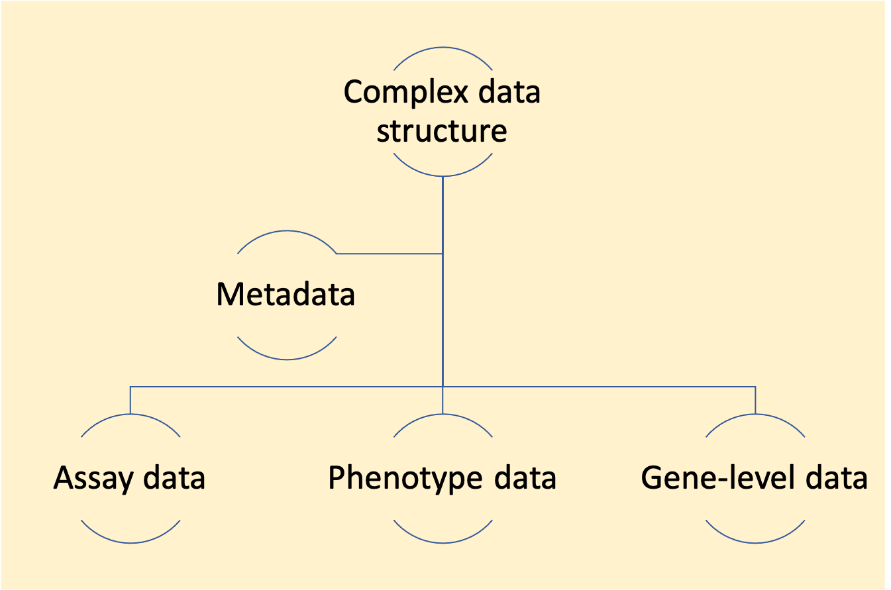

Raw data from many biomedical experiments, especially those that use high-throughput techniques, can be very large and complex. Because of the scale and complexity of these data, software for pre-processing the data in R often uses complex, ‘untidy’ data formats. While these formats are necessary for computational efficiency, they add a critical barrier for researchers wishing to implement reproducibility tools. In this module, we will explain why use of complex data formats is often necessary within open source pre-processing software and outline the hurdles created in reproducibility tool use among laboratory-based scientists.
Objectives. After this module, the trainee will be able to:
In the last few module, we discussed why the tidyverse approach is an excellent way to work with data in R. Unfortunately, though, there are cases where you will need to use a different approach.
In some cases, data might be poorly suited to a tidyverse approach at some part of your pipeline. There are a few factors that could keep data from being suited for a tidyverse approach. We will discuss these characteristics in detail in this module, to help you understand when you might need another approach in part of your pipeline.
Next, we will describe how you can tackle data preprocessing and analysis even if your data is not suited to using the tidyverse. In many cases, this can be done using a collection of packages available for R through a platform called Bioconductor. In many cases, you’ll be able to combine the two approaches, using Bioconductor when needed and the tidyverse approach for steps in your pipeline when the data is more suited to this approach. This is a powerful combination, as it leverages the efficiency and power of the tidyverse approach with more customized tools that are necessary to tackle more complex processes.
It can be frustrating to realize that you can’t use your standard tools in some steps of working with the data you collect in your experiments. For example, you may have taken an R course or workshop, and be at the point where you are starting to feel pretty comfortable with how to use R to work with standard datasets. You can feel like you’re starting at square one when you realize that approach won’t work for some steps of working with the data you’re collecting for your own research.
This and the following few modules aim to help you navigate this process. It is helpful to understand how the Bioconductor approach differs from the tidyverse approach, to start developing a framework and tools for navigating both approaches.
The primary difference between the two approaches is how the data objects are structured. When you work with data in R, it is kept in an “object”, which you can think of as a structured container for the data. In the tidyverse approach, the primary data container is the dataframe. A dataframe is made up of a set of object types called vectors (each column in the dataframe is a vector). Therefore, to navigate the tidyverse approach, the only data structures you need to understand well are the dataframe structure and the vector structure.
By contrast, the Bioconductor approach uses a collection of more complex structured containers to store data as it’s used. There are a number of reasons for this, which we’ll discuss in this module.
As a note, it is very possible that in the near future, all steps of even
complex pipelines will be manageable with a tidyverse approach. More
R developers are embracing the tidyverse approach and making tools and packages
within its framework. In some areas with complex data, there have been
major inroads, allowing a tidyverse approach throughout the pipeline even
when working with complex data. Once example of this is with spatial data,
where the sf package, and related tools, now make it possible to stay in
a tidyverse framework when working with large and complex geospatial data.
We will end this module by discussing the outlook for similar developments
in the area of biomedical data.
The heart of the difference between the tidyverse and Bioconductor approaches comes down to how data are structured within pipelines in the two approaches. There are more differences than this one, but most of the other differences result from this main difference.
As we’ve described in detail in earlier modules, in the tidyverse approach, data are stored throughout the pipeline in a dataframe structure. Functions in the tidyverse input and output either dataframes or the components they are constructed from, vectors (each column in a dataframe is a vector). Because the data are always stored in the same data container, and functions share the same type of input and output, in terms of the data container, it means that the approach can mix and match functions in different orders to tackle complex processes through a chain of many small steps.
By contrast, most packages in Bioconductor use more complex data structures to store data. Often, a Bioconductor pipeline will use different data structures at different points in its pipeline. As a result, with the Bioconductor approach, there will be more types of data structures that you will have to learn how to use and navigate. As another result, it will often be the case that the functions that you use in your pipeline will only work with a specific data structure. You therefore will need to keep track of which type of data structure is required as the input to each function.
This also means that you are more constrained in how you chain together different functions to make a pipeline. In the tidyverse approach, you can often chain the functions in any order, since each function inputs and outputs the same data structure (a dataframe). With a Bioconductor pipeline, however, there will be functions that input one data structure and output a different one. One result from this is that Bioconductor functions, instead of being “small” functions that do one simple thing, will carry out a number of complex steps within each function call.
To customize your pipeline, in tidyverse you will change the functions you include and the order in which you call them. For a Bioconductor pipeline, it’s more common that to customize it, you will adjust parameter settings within functions, but still call a standard series of functions in a standardized order.
As we noted briefly earlier, the Bioconductor project is one area of R programming where complex data structures, rather than a tidyverse approach, tends to dominate (although there does seem to be an evolution toward more tidyverse techniques in Bioconductor, as we’ll discuss some in later modules). Bioconductor is critical to learn if you are working with genomic [?] data, as many of the key tools and algorithms for this type of data are shared through that project. This means that, for many biomedical researchers who are now generating complex, high-throughput data, it is worth learning how to use complex data structures in R.
To be clear, a pipeline in R that includes these complex data structures will typically still be modular, in the sense that you can adapt and separate specific parts of the pipeline. However, they tend to be much less flexible than pipelines developed with a tidyverse approach. The data structure changes often, with certain functions outputing a data structure that is needed for the next step, then the function of the next step outputting the data in a different structure, and so on. This changing data structure means that the functions for each step often are constrained to always be put in the same order. By comparison, the small tools that make up tidyverse functions can often be combined in many different orders, letting you build a much larger variety of pipelines with them. Also, many of the functions that work with complex data types will do many things within one function, so they can be harder to learn and understand, and they are often much more customized to a specific action, which means that you have to learn more functions (since each does one specific thing).
It can be helpful to understand why the Bioconductor approach is designed in the way it is. First, there are some characteristics of complex data that can make it unsuitable for a tidyverse approach. In the next section of the module, we’ll discuss some of these characteristics, as well as provide examples of how biomedical data can have these characteristics.
However, there are also some historical and cultural reasons for the Bioconductor design. It is helpful to have an introduction to this, as it can help you navigate as you work within the Bioconductor framework.
Bioconductor predates the tidyverse approach. Bioconductor has been around almost as long as R itself—the first version of R was first released in 2000, and Bioconductor started in 2003.
The Bioconductor project had an ambitious aim—allow people around the world to coordinate to make tools for preprocessing and analyzing genomic and other high-throughput data. Andy Warhol, the famous pop artist, had a studio where the door was always open, and people were free to walk in off the street to help create new things (Judkins 2016). An open source programming environment is like this. Anyone is allowed to make their own extension to R as a package, including a Bioconductor package.
Imagine how complex it is to try to harness all these contributions. Within the Bioconductor project, it’s managed by using some general design principles that are centered on some standard data structures. Each person who writes code for Bioconductor can use these data structures, writing functions that input and output data within these defined structures. If they are working on something where there isn’t yet a defined structure, they can define new ones within their package, which others can then use in their own packages.
There is a big advantage to having stricter standards for what parts of data go where when it comes to writing functions that can be used across a lot of data. You can think of this in terms of how cars are set up versus how kitchens are set up. Cars are very standardized in the “interface” that you get when you sit down to drive them. The gas and brakes are typically floor pedals, with the gas to the right of the brake. The steering is almost always provided through a wheel centered in front of the driver’s torso. The mechanism for shifting gears (e.g., forward, reverse) is typically to the right of the steering wheel, while mecahnisms for features like lights and windshield wipers, are typically to the left of the steering wheel. Because this interface is so standardized, you can get into a car you’ve never driven before and typically figure out how to drive it very quickly. You don’t need a lot of time exploring where everything is or a lot of directions from someone familiar with the car to figure out where things are. Think of the last time that you drove a rental car—within five minutes, at most, you were probably able to orient yourself to figure out where everything you needed was. This is like a dataframe in R—you can pretty quickly figure out where everything you might need is stored in the data structure, and people can write functions to use with these dataframes that work well generally across lots of people’s data because they can assume that certain pieces of data are in certain places.
By contrast, think about walking into someone else’s kitchen and orienting yourself to use that. Kitchen designs do tend to have some general features—most will have a few common large elements, like a stove somewhere, a refrigerator somewhere, a pantry somewhere, and storage for pots, pans, and utensils somewhere. However, there is a lot of flexibility in where each of these are in the kitchen design, and further flexibility in how things are organized within each of these structures. If you cook in someone else’s kitchen, it is easy to find yourself disoriented in the middle of cooking a recipe, where a utensil that you can grab almost without thinking in your own kitchen requires you to stop and search many places in someone else’s kitchen. This is like a list in R—there are so many places that you can store data in a list, and so much flexibility, that you often find yourself having to dig around to find a certain element in a list data structure that someone else has created, and you often can’t assume that certain pieces are in certain places if you are writing your own functions, so it becomes hard to write functions that are “general purpose” for generic list structures in R.
Robert Gentleman, one of the creators of Bioconductor [?], highlights this as a key reason for using these more complex data structures. R is an open-source language, and it allows contributions from software developers worldwide. The Bioconductor project leverages the base R software to build tools for working with complex genomic [?] data, also allowing for the development of new extensions from developers worldwide. The software extensions are developed, therefore, not by a unified team that is all employed at the same place, but instead by a collection of people who are making software as part of their research program, or perhaps as part of an industry job, and who write that software with the intent of having it work smoothly with other software packages that are available through Bioconductor.
If you have ever been in a role where you organized volunteers to perform a large task, you can probably imagine how challenging it is to design a project in a way that allows for this type of software development to work. The use of specialized data structures is one element that helps in this coordination for Bioconductor. It enforces a standard that all the programmers can work toward—they can work under the assumption that the output from other functions in the Bioconductor ecosystem will be structured in a certain way, and so they can work under the assumption that certain elements of the data will be in certain spots in the data structure of the object.
[Example of the party game where you each add a sentence, only seeing part of the story. Exquisite corpse. Surrealist game you could do with either writing or drawing (later people adapted to other things, like music composition). With drawing, you are typically drawing a person or other being, with the defined parts of a head, torso, and legs. One person does a part (the head area), then folds so the next person can only see enough to connect with what they did, then the next person draws the next part (the torso area), again folds so the next person can only see enough to connect, and so on. This results in writing or a drawing that is connected across the different parts, but can be completely independent within each part (and unrelated to other parts). Collaborative, combines different parts made by different people.]
There are a few characteristics that can make data unsuitable for a tidyverse approach. Biomedical data often have these characteristics.
The dataframe structure has the advantage of being simple to understand and use. However, the dataframe lacks flexibility in storing data that does not naturally follow a two-dimensional structure, and it can struggle to handle massive datasets. Therefore, in some cases, it is appropriate to adopt approaches that store data in more complex data structures.
There are two main features of biomedical data—in particular, data collected from laboratory equipment like flow cytometers and mass spectrometers—that make it useful to use more complex data structures in R in the earlier stages of preprocessing the data. First, the data are often very large, in some cases so large that it is difficult to read them into R. Second, the data might combine various elements, each with their own natural structures, that you’d like to keep together as you move through the steps of preprocessing the data.
Dataframes are very clearly and simply organized. However, they can be too restrictive in some cases. Sometimes, you might have data that are taken at different levels of observation—for example, you might have some measurements that are specific to a specific sample, but then other measurements or data that are common to the experiment as a whole (metadata).
Also, the simple dataframe structure doesn’t have the capacity to store data taken at these different levels within the same structure (at least, not without a lot of repetition). Further, the dataframe won’t work for massive datasets. Sometimes, you will get massive amounts of data from equipment like spectrometers or cytometers, and these datasets can be so big that they can’t be easily read into R. One strategy with massive data is to read in only the bits you need as you need them, rather than reading in all the data and then using R commands to work with the full dataset. We’ll look later in this module about how more complex data structures can facilitate this approach when working with massive data in R.
What characteristics might make data less suited for a dataframe structure in R? There are a variety of characteristics that could cause this. First, if data is extremely large, it may exceed a size that is reasonable for a dataframe structure. Some of the more complex data structures in R allow much of the data to stay “on disc”, rather than be loaded into RAM, when the data are structured to provide access from R.
Other datasets may not fit well within the two-dimensional, non-ragged structure that is characteristic of the dataframe structure. For example, some biomedical data may have data that records characteristics at several levels of the data. It may have records on the levels of gene expression within each sample, separate information about each gene that was measured, and another separate set of information that characterizes each of the samples. While it is critical to keep “like” measurements aligned with data like this—in other words, to ensure that you can connect the data that characterizes a gene with the data that provides measures of the level of expression of that gene in each sample—these data do not naturally have a two-dimensional structure and so do not fit naturally into a dataframe structure.
“Big data is encountered in genomics for two reasons: the size of the genome and the heterogeneity of populations. Complex organisms, such as plants and animals, have genomes on the order of billions of base pairs (the human genome consists of over three billion base pairs). The diversity of populations, whether of organisms, tissues or cells, means we need to sample deeply to detect low frequency events. To interrogate long and/or numerous genomic sequences, many measurements are necessary. For example, a typical whole genome sequencing experiment will consist of over one billion reads of 75–100 bp each. The reads are aligned across billions of positions, most of which have been annotated in some way. This experiment may be repeated for thousands of samples. Such a data set does not fit within the memory of a current commodity computer, and is not processed in a timely and interactive manner. To successfully wrangle a large data set, we need to intimately understand its structure and carefully consider the questions posed of it.” (Lawrence and Morgan 2014)
“A major challenge in the analysis of scRNA-seq data is the scalability of analysis methods as datasets increase in size over time. This is particularly problematic as experiments now frequently produce millions of cells [50–53], possibly across multiple batches, making it challenging to even load the data into memory and perform downstream analyses including quality control, batch correction and dimensionality reduction. Providing analysis methods, such as unsupervised clustering, that do not require data to be loaded into memory is an imperative step for scalable analyses. While large-scale scRNA-seq data are now routinely stored in on-disk data formats (e.g. HDF5 files), the methods to process and analyze these data are lagging.” (Hicks et al. 2021)
There’s a second reason why dataframe structures don’t always work for data from biological experiments, which has to do with the size of data (and so how much memory it requires). A computer has several ways that it can store data. The primary storage is closely connected with the computer’s processing unit, where calculations are made, and so data stored in this primary storage can be processed by code very quickly. R uses this approach, and so when you load data in R to be stored in one of its traditional data structures, that data is moved into part of the computer’s primary storage (its random access memory, or RAM).
Data can also be stored in other devices on a computer, including hard drives and solid state drives that are built into the computer (the computer’s secondary storage devices) or even onto storage devices that can be removed from the computer, like USB drives or external hard drives (the computer’s tertiary storage). The size of available storage in these devices tends to be much, much larger than the storage size of the computer’s RAM. However, it takes longer to access data in these secondary storage devices because they aren’t directly connected to the processor, and instead require the data to move into RAM before it can be accessed by the processor, which is the only part of the computer that can do things to analyze, modify, or otherwise process the data.
Your data will often be saved on a file in the computer’s secondary memory (e.g., in a file stored on the computer’s solid state drive) before you read it into R, then moved into memory (RAM, part of the primary storage) when you ask R to load it into a data structure that you can access with code commands in R. However, the storage size available in RAM will always be much, much smaller than the storage size in secondary storage devices like solid state drives, and so with larger data, problems can arise if you try to read data into RAM that is too large for that primary storage device to accommodate.
The traditional dataframe structure in R is therefore built after reading the data in memory, into RAM. However, many biological experiments now create data that is much too large to read into memory for R in a reasonable way (Lawrence and Morgan 2014; Hicks et al. 2021). More complex data structures can allow more sophisticated ways to handle massive data, and so they are often necessary when working with massive biological datasets, particularly early in pre-processing, before the data can be summarized in an efficient way. For example, a more complex data structure could allow much of the data to be left on disk, and only read into memory [RAM?] on demand, as specific portions of the data are needed (Gatto 2013; Hicks et al. 2021). This approach can be used to iterate across subsets of the data, only reading parts of the data into memory at a time (Lawrence and Morgan 2014). Such structures can be designed to work in a way that, if you are the user, you won’t notice the difference in where the data is kept (on disk versus in memory)—this means you won’t have to worry about these memory management issues, but instead can just gain from everything going smoothly, even as datasets get very large (Gatto 2013).
[Data size, on-disk backends for files, like HDF5 and netCDF—used for flow cytometry file format?]
“Reading in a large dataset for which you do not have enough RAM is one easy way to freeze up your computer (or at least your R session). This is usually an unpleasant experience that usually requires you to kill the R process, in the best case scenario, or reboot your computer, in the worst case.” (R. D. Peng 2016)
“If you use too much memory, R will complain. The key issue is that R holds all the data in RAM. This is a limitation if you have huge datasets. The up-side is flexibility—in particular, R imposes no rules on what data are like.” (Burns 2011)
“Random access memory (RAM) is a type of computer memory that can be accessed randomly: any byte of memory can be accessed without touching the preceding bytes. RAM is found in computers, phones, tablets and even printers. The amount of RAM R has access to is incredibly important. Since R loads objects into RAM, the amount of RAM you have available can limit the size of data set you can analyse.” (Gillespie and Lovelace 2016)
“A rough rule of thumb is that your RAM should be three times the size of your data set.” (Gillespie and Lovelace 2016)
“RAM is cheap and thinking hurts.” Uwe Ligges (about memory requirements in R) R-help (June 2007)
“The strengths of R are also its weaknesses: the R API encourages users to store entire data sets in memory as vectors. These vectors are implicitly and silently copied to achieve copy-on-write semantics, contribuing to high memory usage and poor performance.” (Lawrence and Morgan 2014)
“Our ultimate goal is to process and summarize a large data set in its entirety, and iteration enables this by limiting the resource commitment at a given point in time. Limiting resource consumption generalizes beyond iteration and is a fundamental technique for computing with big data. In many cases, it may render iteration unnecessary. Two effective approaches for being frugal with data are restriction and compression. Restriction means controlling which data are loaded and lets us avoid wasting resources on irrelevant or excessive data. Compression helps by representing the same data with fewer resources.” (Lawrence and Morgan 2014)
“The Bioconductor project distributes the software as a number of different R packages, including Rsamtools, IRanges, GenomicRanges, GenomicAlignments, Biostrings, rtracklayer, biovizBase and BiocParallel. The software enables the analyst to conserve computational resources, iteratively generate summaries and visualize data at arbitrary levels of detail. These advances have helped to ensure that R and Bioconductor remain relevant in the age of high-throughput sequencing. We plan to continue in this direction by designing and implementing abstractions that enable user code to be agnostic to the mode of data storage, whether it be memory, files or databases. This will bring much needed agility to resource allocation and will enable the user to be more resourceful, without the burden of increased complexity.” (Lawrence and Morgan 2014)
[Potential future direction—developments of tidyverse based front ends for
data stored in databases or on-disk file formats—sergeant package is one
example, also running tidyverse commands on data in database, matter package?,
disk.frame package?]
Powerful algorithms
One of the advantages of these complex data structures for biomedical data preprocessing is that they can be leveraged to develop very powerful algorithms for working with complex biomedical data.
[Examples]
Examples of types of complex pre-processing algorithms
In some cases, more complex algorithms may be used to normalize data across different samples [?]—for example, the normalization algorithm may leverage the assumption that the vast majority of values (e.g., expression levels of genes) are the same in all samples, with only a few varying between the samples. Starting from this assumption, an algorithm can be developed to normalize across the samples, to help in identifying genes with important differences in expression across the samples.
[Other examples]
In previous modules, we have gone into a lot of detail about all of the advantages of the tidyverse approach. However as you work with biomedical data, particularly complex data from complex research equipment, like mass spectrometers and flow cytometers, you may find that it is unreasonable to start with a tidyverse approach from the first steps of pre-processing the data.
In this module, we will explain why the tidyverse approach is currently not always ideal throughout all steps of pre-processing, analysis, and visualization of the types of data that you may collect through a biomedical research experiment. We will explain what data structures are, and present some of the types of data structures commonly used in packages in the Bioconductor project. These more complex data structures largely leverage a system in R called the S4 object-oriented system, which translates some ideas from object-oriented programming to use to handle large and complex data in R.
In this module, we will cover several of the most popular data structures (each available as an S4 object class) that are used to work with data within Bioconductor packages. In a later module, we will explain how you can build a pipelin that combines Bioconductor and tidyverse approaches, in which early steps in data pre-processing use the Bioconductor approach to handle large and complex initial data, and later steps shift to use a tidyverse approach, once it is appropriate to store data in simpler structures like dataframes.
In this and following modules, we will therefore explain the advantages and disadvantages of complex versus simpler data storage formats in R. We will also explain how these advantages and disadvantages weigh out differently in different stages of a data preprocessing and analysis workflow. Finally, we will describe how you can leverage both to your advantage, and in particular the tools and approaches that you can use to shift from a Bioconductor-style approach—with heavy use of complex data storage formats—early in your preprocessing pipeline to a tidyverse approach—centered on storing data in a simple, tidy dataframe object—at later stages, when the data are more suitable to this simpler storage format, which allows you to leverage the powerful and widely-taught tidyverse approach in later steps of analysis and visualization.
In these modules, we will focus on explaining these ideas within the R programming language. This language is a very popular one for both biomedical data sets and also for more general tasks in data management and analysis. However, these principles also apply to other programming languages, particularly those that can be used in an interactive format, including Python and Julia.
Data in R can be stored in a variety of other formats, too. When you are working with biological data—in particular, complex or large data output from laboratory equipment—there can be advantages to using data structures besides dataframes. In this section, we’ll discuss some of the complex characteristics of biomedical data that recommend the use of data structures in R beyond the dataframe. We’ll also discuss how the use of these other data structures can complicate the use of “tidyverse” functions and principles that you might learn in beginning R programming courses and books. In later modules, we’ll discuss how to connect your work in R to clean and analyze data by performing earlier pre-processing steps using more complex data structures and then transferring when possible to dataframes for storing data, to allow you to take advantage of the power and ease of the “tidyverse” approach as early as possible in your pipeline.
As you learn R, you will almost certainly learn how to create and work with the more general data structures, including how to explore the data stored in each of them. By contrast, you may never learn many of the more complex data storage formats, especially if you are not using packages from Bioconductor. However, there are a number of good reasons why R packages—especially those shared through Bioconductor—define and use more complex data formats. In this and following modules, we will explain the advantages and disadvantages of complex versus simpler data storage formats in R. We will also explain how these advantages and disadvantages weigh out differently in different stages of a data preprocessing and analysis workflow. Finally, we will describe how you can leverage both to your advantage, and in particular the tools and approaches that you can use to shift from a Bioconductor-style approach—with heavy use of complex data storage formats—early in your preprocessing pipeline to a tidyverse approach—centered on storing data in a simple, tidy dataframe object—at later stages, when the data are more suitable to this simpler storage format, which allows you to leverage the powerful and widely-taught tidyverse approach in later steps of analysis and visualization.
In these modules, we will focus on explaining these ideas within the R programming language. This language is a very popular one for both biomedical data sets and also for more general tasks in data management and analysis. However, these principles also apply to other programming languages, particularly those that can be used in an interactive format, including Python and Julia.
An open source programming environment is like Andy Warhol’s studio—the door is always open, and people are free to walk in off the street and chip in to help create new things (Judkins 2016). This means, though, that there need to be some general design principles to help coordinate all these contributions.
The R programming language offers a wide variety of structures that can be used to store data as you work with it, including steps of preprocessing and analysis of the data. Some of these structures are defined through the base R language that you first install, while other structures are specially defined through the extension R packages you add as you continue to work with R. These packages are specific to the tasks you aim to do, and if they define their own data storage structures, those structures are typically customized to that task.
For example, there are packages—including the xcms package, for
example—that allow you to load and preprocess data from LC-MS experiments.
These packages include functionality to load data from a specialized format
output by mass spectometry equipment, as well as identify and align peaks within
the data that might indicate, for example, metabolite features for a
metabolomics analysis. The xcms package defines its own structures that are
used to store data during this preprocessing, and also draws on specialized data
structures defined in other R extension packages, including the OnDiskMSnExp
data object class that is defined by the MSnbase package.
Complex data structures like these can be very precise in defining what types of data they contain and where each component of the data goes. Later in this and other modules, we will provide more details about the advantages and disadvantages of these types of specialized data storage formats, especially in the context of improving transparency, rigor, and reproducibility across the steps of preprocessing experimental biomedical data.
Dataframes are very clearly and simply organized. However, they can be too restrictive in some cases. Sometimes, you might have data that are taken at different levels of observation—for example, you might have some measurements that are specific to a specific sample, but then other measurements or data that are common to the experiment as a whole (metadata).
Also, the simple dataframe structure doesn’t have the capacity to store data taken at these different levels within the same structure (at least, not without a lot of repetition). Further, the dataframe won’t work for massive datasets. Sometimes, you will get massive amounts of data from equipment like spectrometers or cytometers, and these datasets can be so big that they can’t be easily read into R. One strategy with massive data is to read in only the bits you need as you need them, rather than reading in all the data and then using R commands to work with the full dataset. We’ll look later in this module about how more complex data structures can facilitate this approach when working with massive data in R.
The dataframe structure has the advantage of being simple to understand and use. By using the dataframe as a common structure, the tidyverse approach is able to create a powerful environment for working with data, because the use of a common structure allows you to program using small, simple functions that can be combined in different ways to solve complex tasks.
However, the dataframe lacks flexibility in storing data that does not naturally follow a two-dimensional structure, and it can struggle to handle massive datasets. Therefore, in some cases, it is appropriate to adopt approaches that store data in more complex data structures.
There are two main features of biomedical data—in particular, data collected from laboratory equipment like flow cytometers and mass spectrometers—that make it useful to use more complex data structures in R in the earlier stages of preprocessing the data. First, the data are often very large, in some cases so large that it is difficult to read them into R. Second, the data might combine various elements, each with their own natural structures, that you’d like to keep together as you move through the steps of preprocessing the data.
The code for different implementations of a method (in other words, different ways it will run with new object classes) can come in different R packages. This allows a developer to add his or her own applications of methods, suited for object classes he or she creates.
A class defines the structure for a way of storing data. When you create
an object that follows this structure, it’s an instance of that class.
The new function is used to create new instances of a class.
When a generic function determines what code to run based on the class of the object, it’s called method dispatch.
Examples of complex biomedical data suited for complex data structures
In the last module, we covered the tidyverse approach to working with data in R. This approach hinges on using a common data structure, the dataframe. With many tasks in data management and analysis, this data structure is sufficient, and so can be leveraged with the tidyverse approach. However, there are some cases where data are not well suited for a dataframe structure. In these cases, you may need to use some of R’s more complex data structures, at least for part of your data preprocessing and analysis pipeline.
What characteristics might make data less suited for a dataframe structure in R? There are a variety of characteristics that could cause this. First, if data is extremely large, it may exceed a size that is reasonable for a dataframe structure. Some of the more complex data structures in R allow much of the data to stay “on disc”, rather than be loaded into RAM, when the data are structured to provide access from R.
Other datasets may not fit well within the two-dimensional, non-ragged structure that is characteristic of the dataframe structure. For example, some biomedical data may have data that records characteristics at several levels of the data. It may have records on the levels of gene expression within each sample, separate information about each gene that was measured, and another separate set of information that characterizes each of the samples. While it is critical to keep “like” measurements aligned with data like this—in other words, to ensure that you can connect the data that characterizes a gene with the data that provides measures of the level of expression of that gene in each sample—these data do not naturally have a two-dimensional structure and so do not fit naturally into a dataframe structure.
Building on list data structures
R allows for very complex and specialized data structures, suitable to be customized for very specific needs with large or complex data. These structures tend to build on the generic list data structure.
Another common general purpose data structure in R is the list, which allows you to combine data stored in any type of structure to create a single R object, giving enormous flexibility (but minimal set structure from one object to another). This data structure is the building block for some of the more complex specific data structures, which we’ll cover next.
The R programming language offers a wide variety of structures that can be used to store data as you work with it, including steps of preprocessing and analysis of the data. Some of these structures are defined through the base R language that you first install, while other structures are specially defined through the extension R packages you add as you continue to work with R. These packages are specific to the tasks you aim to do, and if they define their own data storage structures, those structures are typically customized to that task.
Many of these more specific data structures are built on the more generic idea of the list data structure, which provides a very flexible way to combine other data structures to create a single R object. In R, you can think of a list data structure as having various slots where it can store data, and each of these slots can store data stored in another structure. For example, one slot of a list might store a dataframe of data, while another might store a vector or a dataframe for a different level of observation. A slot could even store another list. As an example, if we want to store the type of data shown in Figure 3.2, we could use a list data structure with one slot that stores the metadata for the experiment, another that stores a dataframe or matrix with the assay data, another with a dataframe or matrix that stores the phenotype data, and another with a dataframe or matrix that stores the gene-level data. Each of these slots in the list will get a name, and we can use that name to access each of these pieces of data later. The list, in this case, allows us to store all these different types of data from an experiment in the same structure in R, so we can make sure we keep the data together in a single structure, even though it’s too complex to fit in a simple dataframe.
Many R data structures are built on a general structure called a “list”. This data structure is a useful basic general data structure, because it is extraordinarily flexible. The list data structure is flexible in two important ways: it allows you to include data of different types in the same data structure, and it allows you to include data with different dimensions—and data stored hierarchically, including various other data structures—within the list structure. We’ll cover each of these points a bit more below and describe why they’re helpful in making the list a very good general purpose data structure.
The list data structure is much more flexible than the vector or dataframe. It essentially allows you to create different “slots”, and you can store any type of data in each of these slots. In each slot you can store any of the other types of data structures in R—for example, vectors, dataframes, or other lists. You can even store unusual things like R environments [?] or pointers that give the directions to where data is stored on the computer without reading the data into R (and so saving room in the RAM memory, which is used when data is “ready to go” in R, but which has much more limited space than the mass [?] storage on your computer).
Since you can put a list into the slot of a list, it allows you to create deep, layered structures of data. For example, you could have one slot in a list where you store the metadata for your experiment, and this slot might itself be a list where you store one dataframe with some information about the settings of the laboratory equipement you used to collect the data, and another dataframe that provides information about the experimental design variables (e.g., which animal received which treatment). Another slot in the larger list then might have experimental measurements, and these might either be in a dataframe or, if the data are very large, might be represented through pointers to where the data is stored in memory, rather than having the data included directly in the data structure.
Given all these advantages of the list data structure, then, why not use it all the time? While it is a very helpful building block, it turns out that its flexibility can have some disadvantages in some cases. This flexibility means that you can’s always assume that certain bits of data are in a certain spot in each instance of a list in R. Conversely, if you have data stored in a less flexible structure, you can often rely on certain parts of the data always being in a certain part of the data structure. In a “tidy” dataframe, for example, you can always assume that each row represents the measurements for one observation at the unit of observation for that dataframe, and that each column gives values across all observations for one particular value that was measured for all the observations. For example, if you are conducting an experiment with mice, where a certain number of mice were sacrificed at certain time points, with their weight and the bacteria load in their lungs measured when the mouse was sacrificed, then you could store the data in a dataframe, with a row for each mouse, and columns giving the experimental characteristics for each mouse (e.g., treatment status, time point when the mouse was sacrificed), the mouse’s weight, and the mouse’s bacteria load when sacrificed. You could store all of this information in a list, as well, but the defined, two-dimensional structure of the dataframe makes it much more clearly defined where all the data goes in the dataframe structure, while you could order the data in many ways within a list.
There is a big advantage to having stricter standards for what parts of data go where when it comes to writing functions that can be used across a lot of data. You can think of this in terms of how cars are set up versus how kitchens are set up. Cars are very standardized in the “interface” that you get when you sit down to drive them. The gas and brakes are typically floor pedals, with the gas to the right of the brake. The steering is almost always provided through a wheel centered in front of the driver’s torso. The mechanism for shifting gears (e.g., forward, reverse) is typically to the right of the steering wheel, while mecahnisms for features like lights and windshield wipers, are typically to the left of the steering wheel. Because this interface is so standardized, you can get into a car you’ve never driven before and typically figure out how to drive it very quickly. You don’t need a lot of time exploring where everything is or a lot of directions from someone familiar with the car to figure out where things are. Think of the last time that you drove a rental car—within five minutes, at most, you were probably able to orient yourself to figure out where everything you needed was. This is like a dataframe in R—you can pretty quickly figure out where everything you might need is stored in the data structure, and people can write functions to use with these dataframes that work well generally across lots of people’s data because they can assume that certain pieces of data are in certain places.
By contrast, think about walking into someone else’s kitchen and orienting yourself to use that. Kitchen designs do tend to have some general features—most will have a few common large elements, like a stove somewhere, a refrigerator somewhere, a pantry somewhere, and storage for pots, pans, and utensils somewhere. However, there is a lot of flexibility in where each of these are in the kitchen design, and further flexibility in how things are organized within each of these structures. If you cook in someone else’s kitchen, it is easy to find yourself disoriented in the middle of cooking a recipe, where a utensil that you can grab almost without thinking in your own kitchen requires you to stop and search many places in someone else’s kitchen. This is like a list in R—there are so many places that you can store data in a list, and so much flexibility, that you often find yourself having to dig around to find a certain element in a list data structure that someone else has created, and you often can’t assume that certain pieces are in certain places if you are writing your own functions, so it becomes hard to write functions that are “general purpose” for generic list structures in R.
There is a way that list structures can be used in R in a way that retains some of their flexibility while also leveraging some of the benefits of standardization. This is R’s system for creating objects. These object structures are built on the list data structure, but each object is constrained to have certain elements of data in certain structures of the data. These structures cannot be used as easily as dataframes in a “tidyverse” approach, since the tidyverse tools are built based on the assumption that data is stored in a tidy dataframe. However, they are used in many of the Bioconductor approaches that allow powerful tools for the earlier stages in preprocessing biological data. The types of standards that are imposed in the more specialized objects include which slots the list can have, the names they have, what order they’re in (e.g., in a certain object, the metadata about the experiment might always be stored in the first slot of the list), and what structures and/or data types the data in each slot should have.
S3 and S4 objects in R
Many complex data structures in R are defined as S3 or S4 objects.
Bundling and aligning
One characteristic that can make data complex is if it includes measurements that are taken at several different levels of observation. For example, a single data set may have some observations or measurements that are taken at the level of the sample (e.g., the age, sex, and treatment of each study subject from which the samples are taken). It may have other measurements that are taken at the level of the gene (e.g., [values that you would have per gene]), and then measurements that are the result of a specific assay [?] (e.g., the expression level of each of the measured genes within each sample).
These different types of data could be stored in different dataframes, with a common identifier to help link them. They could even be stored in separate dataframes with the positions used to link them (for example, if each column represents a gene in one dataframe and each row represents a gene in another, then you assume that the second column in the first dataframe aligns with the second row in the second dataframe), although this method can be prone to errors, especially one you begin subsetting the original dataframes in the course of data preprocessing and analysis.
More complex data structures can help in both bundling all these pieces of data into a single object, while at the same time enforcing alignment across the pieces of data, so you can line up the measurements for a specific gene or sample across data taken at different levels.
The data from genomic and other high-throughput experiments often are too complex and/or large to make dataframes practical as data structures, at least until data can be simplified through pre-processing. In this section, we’ll look at an approach to pre-processing these data, leveraging more complex data structures when needed. Once data have been pre-processed, they are often simplified to the point where they can be stored in a dataframe, and so it is possible to create workflows that move into a tidyverse approach once data can reasonably be stored in dataframes. This creates a powerful pipeline, using more complex tools when necessary and then moving into the more straightforward tidyverse approach when possible. In the next module, we’ll discuss how you can adopt this type of combined approach.
Most laboratory equipment can output a raw data file that you can then read into R. For many types of laboratory equipment, these raw data files follow a strict format. The file formats will often have different pieces of data stored in specific spots. For example, the equipment might record not only the measurements taken for the sample, but also information about the setting that were applied to the equipment while the measurements were taken, the date of the measurements, and other metadata that may be useful to access when preprocessing the data. Each piece of data may have different “dimensions”. For example, the measurements might provide one measurement per metabolite feature or per marker. Some metadata might also be provided with these dimensions (e.g., metadata about the markers for flow cytometry data), but other metadata might be provided a single time per sample or even per experiment—for example, the settings on the equipment when the sample or samples were run.
When it comes to data structures, dataframes and other two-dimensional data storage structures (you can visualize these as similar to the format of data in a spreadsheet, with rows and columns) work well to store data where all data conform to a common dimension. For example, a dataframe would work well to store the measurements for each marker in each sample in a flow cytometry experiment. In this case, each column could store the values for a specific marker and each row could provide measurements for a sample. In this way, you could read the measurements for one marker across all samples by reading down a column, or read the measurements across all markers for one sample by reading across a row.
When you have data that doesn’t conform to these common dimensions [unit of measurement?] however, a dataframe may work poorly to store the data. For example, if you have measurements taken at the level of the equipment settings for the whole experiment, these don’t naturally fit into the dataframe format. In the “tidyverse” approach, one approach to handling data with different units of measurement is to store data for each unit of measurement in a different dataframe and to include identifiers that can be used to link data across the dataframes. More common, however, in R extensions for preprocessing biomedical data is to use more complex data structures that can store data with different units of measurement in different slots within the data structure, and use these in conjunction with specific functions that are built to work with that specific data structure, and so know where to find each element within the data structure.
Let’s start by looking at how some data might have a structure that is too complex to fit into a two-dimensional dataframe. Figure 3.2 shows an example of different components of data that may need to be stored in a data structure that is more complex than a dataframe. Data from a genomic experiment may include data from several levels, including metadata that describes the entire experiment, as well as assay data, phenotype data, and gene-level data. More complex data structures in R can be used to store all these pieces of data inside a single data structure.
Figure 3.2: An example of different components of data that may need to be stored in a data structure that is more complex than a dataframe. Data from a genomic experiment may include data from several levels, including metadata that describes the entire experiment, as well as assay data, phenotype data, and gene-level data. More complex data structures in R can be used to store all these pieces of data inside a single data structure.
Handling large data
Two approaches for this are on disc and through R environments.
“Big data is encountered in genomics for two reasons: the size of the genome and the heterogeneity of populations. Complex organisms, such as plants and animals, have genomes on the order of billions of base pairs (the human genome consists of over three billion base pairs). The diversity of populations, whether of organisms, tissues or cells, means we need to sample deeply to detect low frequency events. To interrogate long and/or numerous genomic sequences, many measurements are necessary. For example, a typical whole genome sequencing experiment will consist of over one billion reads of 75–100 bp each. The reads are aligned across billions of positions, most of which have been annotated in some way. This experiment may be repeated for thousands of samples. Such a data set does not fit within the memory of a current commodity computer, and is not processed in a timely and interactive manner. To successfully wrangle a large data set, we need to intimately understand its structure and carefully consider the questions posed of it.” (Lawrence and Morgan 2014)
“A major challenge in the analysis of scRNA-seq data is the scalability of analysis methods as datasets increase in size over time. This is particularly problematic as experiments now frequently produce millions of cells [50–53], possibly across multiple batches, making it challenging to even load the data into memory and perform downstream analyses including quality control, batch correction and dimensionality reduction. Providing analysis methods, such as unsupervised clustering, that do not require data to be loaded into memory is an imperative step for scalable analyses. While large-scale scRNA-seq data are now routinely stored in on-disk data formats (e.g. HDF5 files), the methods to process and analyze these data are lagging.” (Hicks et al. 2021)
There’s a second reason why dataframe structures don’t always work for data from biological experiments, which has to do with the size of data (and so how much memory it requires). A computer has several ways that it can store data. The primary storage is closely connected with the computer’s processing unit, where calculations are made, and so data stored in this primary storage can be processed by code very quickly. R uses this approach, and so when you load data in R to be stored in one of its traditional data structures, that data is moved into part of the computer’s primary storage (its random access memory, or RAM).
Data can also be stored in other devices on a computer, including hard drives and solid state drives that are built into the computer (the computer’s secondary storage devices) or even onto storage devices that can be removed from the computer, like USB drives or external hard drives (the computer’s tertiary storage). The size of available storage in these devices tends to be much, much larger than the storage size of the computer’s RAM. However, it takes longer to access data in these secondary storage devices because they aren’t directly connected to the processor, and instead require the data to move into RAM before it can be accessed by the processor, which is the only part of the computer that can do things to analyze, modify, or otherwise process the data.
Your data will often be saved on a file in the computer’s secondary memory (e.g., in a file stored on the computer’s solid state drive) before you read it into R, then moved into memory (RAM, part of the primary storage) when you ask R to load it into a data structure that you can access with code commands in R. However, the storage size available in RAM will always be much, much smaller than the storage size in secondary storage devices like solid state drives, and so with larger data, problems can arise if you try to read data into RAM that is too large for that primary storage device to accommodate.
The traditional dataframe structure in R is therefore built after reading the data in memory, into RAM. However, many biological experiments now create data that is much too large to read into memory for R in a reasonable way (Lawrence and Morgan 2014; Hicks et al. 2021). More complex data structures can allow more sophisticated ways to handle massive data, and so they are often necessary when working with massive biological datasets, particularly early in pre-processing, before the data can be summarized in an efficient way. For example, a more complex data structure could allow much of the data to be left on disk, and only read into memory [RAM?] on demand, as specific portions of the data are needed (Gatto 2013; Hicks et al. 2021). This approach can be used to iterate across subsets of the data, only reading parts of the data into memory at a time (Lawrence and Morgan 2014). Such structures can be designed to work in a way that, if you are the user, you won’t notice the difference in where the data is kept (on disk versus in memory)—this means you won’t have to worry about these memory management issues, but instead can just gain from everything going smoothly, even as datasets get very large (Gatto 2013).
[Data size, on-disk backends for files, like HDF5 and netCDF—used for flow cytometry file format?]
[Potential future direction—developments of tidyverse based front ends for
data stored in databases or on-disk file formats—sergeant package is one
example, also running tidyverse commands on data in database, matter package?,
disk.frame package?]
“Reading in a large dataset for which you do not have enough RAM is one easy way to freeze up your computer (or at least your R session). This is usually an unpleasant experience that usually requires you to kill the R process, in the best case scenario, or reboot your computer, in the worst case.” (R. D. Peng 2016)
“If you use too much memory, R will complain. The key issue is that R holds all the data in RAM. This is a limitation if you have huge datasets. The up-side is flexibility—in particular, R imposes no rules on what data are like.” (Burns 2011)
“Random access memory (RAM) is a type of computer memory that can be accessed randomly: any byte of memory can be accessed without touching the preceding bytes. RAM is found in computers, phones, tablets and even printers. The amount of RAM R has access to is incredibly important. Since R loads objects into RAM, the amount of RAM you have available can limit the size of data set you can analyse.” (Gillespie and Lovelace 2016)
“A rough rule of thumb is that your RAM should be three times the size of your data set.” (Gillespie and Lovelace 2016)
“RAM is cheap and thinking hurts.” Uwe Ligges (about memory requirements in R) R-help (June 2007)
“The strengths of R are also its weaknesses: the R API encourages users to store entire data sets in memory as vectors. These vectors are implicitly and silently copied to achieve copy-on-write semantics, contribuing to high memory usage and poor performance.” (Lawrence and Morgan 2014)
“Our ultimate goal is to process and summarize a large data set in its entirety, and iteration enables this by limiting the resource commitment at a given point in time. Limiting resource consumption generalizes beyond iteration and is a fundamental technique for computing with big data. In many cases, it may render iteration unnecessary. Two effective approaches for being frugal with data are restriction and compression. Restriction means controlling which data are loaded and lets us avoid wasting resources on irrelevant or excessive data. Compression helps by representing the same data with fewer resources.” (Lawrence and Morgan 2014)
“The Bioconductor project distributes the software as a number of different R packages, including Rsamtools, IRanges, GenomicRanges, GenomicAlignments, Biostrings, rtracklayer, biovizBase and BiocParallel. The software enables the analyst to conserve computational resources, iteratively generate summaries and visualize data at arbitrary levels of detail. These advances have helped to ensure that R and Bioconductor remain relevant in the age of high-throughput sequencing. We plan to continue in this direction by designing and implementing abstractions that enable user code to be agnostic to the mode of data storage, whether it be memory, files or databases. This will bring much needed agility to resource allocation and will enable the user to be more resourceful, without the burden of increased complexity.” (Lawrence and Morgan 2014)
Allow software development across large, diverse teams
Robert Gentleman, one of the creators of Bioconductor [?], highlights this as a key reason for using these more complex data structures. R is an open-source language, and it allows contributions from software developers worldwide. The Bioconductor project leverages the base R software to build tools for working with complex genomic [?] data, also allowing for the development of new extensions from developers worldwide. The software extensions are developed, therefore, not by a unified team that is all employed at the same place, but instead by a collection of people who are making software as part of their research program, or perhaps as part of an industry job, and who write that software with the intent of having it work smoothly with other software packages that are available through Bioconductor.
If you have ever been in a role where you organized volunteers to perform a large task, you can probably imagine how challenging it is to design a project in a way that allows for this type of software development to work. The use of specialized data structures is one element that helps in this coordination for Bioconductor. It enforces a standard that all the programmers can work toward—they can work under the assumption that the output from other functions in the Bioconductor ecosystem will be structured in a certain way, and so they can work under the assumption that certain elements of the data will be in certain spots in the data structure of the object.
[Example of the party game where you each add a sentence, only seeing part of the story. Exquisite corpse. Surrealist game you could do with either writing or drawing (later people adapted to other things, like music composition). With drawing, you are typically drawing a person or other being, with the defined parts of a head, torso, and legs. One person does a part (the head area), then folds so the next person can only see enough to connect with what they did, then the next person draws the next part (the torso area), again folds so the next person can only see enough to connect, and so on. This results in writing or a drawing that is connected across the different parts, but can be completely independent within each part (and unrelated to other parts). Collaborative, combines different parts made by different people.]
The downside of a general list data structure, however, comes in when it comes to developing software for data stored in that structure. The general list structure is very flexible, which is why it can store such different types of data, but this flexibility means that there’s no guarantee about where in the data structure specific elements might be stored. By comparison, in a dataframe each row can be assumed to capture an observation, and each column will capture measurements or characteristics of that observation. Someone can therefore develop software to work with data stored in that structure, relying on finding those type of data in those locations in the data structure. When more complex data are stored in a general list object, the different components could be store in different ways by different users. For example, for the type of complex data shown in Figure 3.2, one person might store the metadata in the first slot of a list and the phenotype data in the second, while another person might store the data in a list with the metadata in the last slot and the phenotype data in the first.
The way around this problem is to create data structures that build off the general list structure, but impose some rules that constrain the structure, so that the same types of data are always stored in the same spot. By doing this, software developers can develop code to work with data stored in that structure, with the guarantee that they can always find certain elements of the data in certain spots in the data structure. Bioconductor makes heavy use of these types of specialized data structures, typically called “classes” in Bioconductor tutorials and user manuals. This is because, in R, they are created using one of R’s object-oriented approaches, most often one called S4.
Complex data structures like these can be very precise in defining what types of data they contain and where each component of the data goes. For example, they may have a “phenoData” slot that only will store a specialized dataframe with phenotype data describing each sample in the experiment [?], and another slot named “featureData” that will only store a specialized dataframe with data about each feature (e.g., gene) investigated in the experiment. With this structure, a software developer can develop a program that inputs data in this structure, always knowing where to find the feature data or the phenotype data.
[Validation of data as it’s entered in an S4 class]
R programmers get a lot of advantages from using these classes because they can write functions under the assumption that certain pieces of the data will always be in the same spot for that type of object. There is still flexibility in the object, in that it can store lots of different types of data, in a variety of different structures. While this “object oriented” approach in R data structures does provide great advantages for programmers, and allow them to create powerful tools for you to use in R, it does make it a little trickier in some cases for you to explore your data by hand as you work through preprocessing. This is because there typically are a variety of these object classes that your data will pass through as you go through different stages of preprocessing, because different structures are suited to different stages of analysis. Functions often can only be used for a single class of objects, and so you have to keep track of which functions pair up with which classes of data. Further, it can be a bit tricky—at least in comparison to when you have data in a dataframe—to explore your data by hand, because you have to navigate through different slots in the object. By contrast, a dataframe always has the same two-dimensional, rectangular structure, and so it’s very easy to navigate and explore data in this structure, and there are a large number of functions that are built to be used with dataframes, providing enormous flexibility in what you can do with data stored in this structure.
As we noted briefly earlier, the Bioconductor project is one area of R programming where complex data structures, rather than a tidyverse approach, tends to dominate (although there does seem to be an evolution toward more tidyverse techniques in Bioconductor, as we’ll discuss some in later modules). Bioconductor is critical to learn if you are working with genomic [?] data, as many of the key tools and algorithms for this type of data are shared through that project. This means that, for many biomedical researchers who are now generating complex, high-throughput data, it is worth learning how to use complex data structures in R.
Powerful algorithms
One of the advantages of these complex data structures for biomedical data preprocessing is that they can be leveraged to develop very powerful algorithms for working with complex biomedical data.
[Examples]
Examples of types of complex pre-processing algorithms
In some cases, more complex algorithms may be used to normalize data across different samples [?]—for example, the normalization algorithm may leverage the assumption that the vast majority of values (e.g., expression levels of genes) are the same in all samples, with only a few varying between the samples. Starting from this assumption, an algorithm can be developed to normalize across the samples, to help in identifying genes with important differences in expression across the samples.
[Other examples]
Challenges
It can be harder to explore your data along the way. With a tidyverse approach, since data are always in dataframes, you can quickly learn some tools that let you extract parts of the data, summarize the data, and visualize it. This allows for exploratory data analysis at each stage as you develop your preprocessing and analysis pipeline. Conversely, if you have a pipeline where the data is continuously being moved from one data structure to another, you have to learn how to use and explore each type of data structure to become as facile with exploring your data along the way.
This can also make it harder to experiment, since often a function will be tied to a specific data structure, and so instead of learning a small set of general use functions that can be combined together in different ways (the tidyverse approach), you must learn more functions, since functions tend to be tied to a data structure (outside of generic functions), and the data structure tends to change frequently across the pipeline.
To be clear, a pipeline in R that includes these complex data structures will typically still be modular, in the sense that you can adapt and separate specific parts of the pipeline. However, they tend to be much less flexible than pipelines developed with a tidyverse approach. The data structure changes often, with certain functions outputing a data structure that is needed for the next step, then the function of the next step outputting the data in a different structure, and so on. This changing data structure means that the functions for each step often are constrained to always be put in the same order. By comparison, the small tools that make up tidyverse functions can often be combined in many different orders, letting you build a much larger variety of pipelines with them. Also, many of the functions that work with complex data types will do many things within one function, so they can be harder to learn and understand, and they are often much more customized to a specific action, which means that you have to learn more functions (since each does one specific thing).
Harder to see all the data
A first limitation of storing data in a complex structure is that it can
make it trickier for you to explore the data as you work with it. When data
are stored in a simple structure, like a dataframe or a vector, there are
simple tools (like the head function) that allow you to see the first
values or the first few rows. Further, the simpler structure of the data
(e.g., a one-dimensional vector or a two-dimensional dataframe) makes it
easy to generate this kind of snapshot of the data.
When data are stored in more complex objects, by contrast, they often have
a more complex, hierarchical structure. For example, a list-based object
could incorporate elements of a dataframe in one part of the object, a
vector in another, and another list in still another. While there are tools
to check out the contents of a list-based object (for example, the str
function), the results can be hard to interpret usefully. If the object
includes lots of elements, with lots of levels of hierarchy in some of the
elements, then when you run this type of exploratory function, you can
get a long print-out of complex output.
To explore this type of complex output, you often have to spend a lot of
time to tackle it from different directions. For example, the str function
allows you to limit output to just a certain number of levels of nesting, so
you might start by just figuring out the top-level elements of the object.
You could then dig deeper into certain elements of the object to take a look
at the data stored in each element.
Therefore, while it is possible to explore the data stored in a more complex data structure, it is often much more onerous to do so than it is to explore data stored in a simpler data structure, like a vector or a dataframe. Similarly, it is more difficult to perform simple operations to explore the data, like getting a summary of the range and quartiles of a set of numeric values, or a count of the number of values in a set that are recorded as missing. We’ll cover this limitation more in the next subsections, as it relates to the difficulty of accessing data if they are stored in more complex data structures, as well as the difficulty in working with those data using general purpose tools like functions from packages in the tidyverse.
[Any tools to help with this for Bioconductor objects? Functions to view bits of the elements stored inside an object?]
Harder to access all the data
Just as it’s harder to view data that are stored in a complex, rather than a simpler, data structure, it can also be harder to access or extract pieces of the data when they are stored in a more complex structure.
Harder to make use of general purpose tools
Higher entry barrier to learn to use well
In previous sections, we described how the R programming language allows for object-oriented programming, and how customized objects are often used in preprocessing for biological data. This is a helpful approach for preprocessing, because it can handle complexities in biological data at its early stages of preprocessing, when R must handle complex input formats from equipment like flow cytometers or mass spectrometers, and data sizes that are often very large.
However, once you have preprocessed your data, it is often possible to work with it in a smaller, more consistent object type. This will give you a lot of flexibility and power. While object-oriented approaches can handle complex data, it can be a little hard to write and work with code that is built on an object oriented approach. Working with this type of code requires you to keep track of what object type your data is in at each stage of a code pipeline, as well as which functions can work with that type of object.
Further, this type of coding, in practice at least, can be a bit inflexible.
Often, specific functions only work with a single or few types of functions. In
theory, object-oriented programming allows for methods that work in customized
ways with different types of objects to apply customized code to that type of
object for similar, common-sense results. For example, there are often summary
and plot methods for most types of objects, and these apply code that is
customized to that object type and output, respectively, summarized information
about the data in the object and a plot of the data in the object. However, when
you want to do more with the object that summarize it or create its default
plot, you often end up needing to move to more customized functions that work
only with a single or few object types. When you get to this point, you find that
you have to remember which functions work with which object type, and you have to
use different functions at different stages of your code pipeline, as your code
changes from one object class to another.
Further, many of these functions input one object type and output a different one. This evolution of object types for storing data can be difficult to navigate and keep track of. Different object types store data in different ways, and so this evolution of data object types for storage can make it tricky to figure out how to extract and explore data along the pipeline. It makes it hard to write your own code to explore and visualize the data along the way, as well, and so users are often restricted to the visualization and analysis functions pre-made and shared in packages when working with data in complex object types, especially until the user becomes very comfortable with coding in R.
Overall, what does this all mean? Object-oriented approaches offer real advantages early in the process of pre-processing biological data, especially complex and large data output from complex laboratory equipment. However, once this pre-processing is completed, there is a big advantage in moving the data into a simple format and then continuing coding, data analysis, and visualization using tools that work with this simple format. This is the approach taken by a suite of R packages called the “tidyverse”, as well as extensions that build off the approach that this suite of tools embraces. This “tidyverse” approach is described in the next section.
In the previous parts of this module, we’ve highlighted some of the ways that complex data structures are useful (and even necessary) for parts of the data pre-processing you may do in R. However, they also have some downsides. In a later module, we’ll talk about how you can use a combined workflow that uses the Bioconductor approach (with more complex data structures) when necessary, but then shifts into a tidyverse approach (based on keeping data in a dataframe structure) as soon as possible in the workflow. Here, we’ll describe some of the limitations of complex data structures to help explain why it’s worthwhile to develop workflows with this combined approach.
The first limitation of using complex data structures is that it requires you to learn each of the data structures and where they keep different elements of the data. Each specialized data structure (“class” in Bioconductor) has defined rules for each of its data storage slots, and you must become familiar with these class-specific rules to be able to explore and extract data stored in that structure.
For example, the ExpressionSet data structure (defined in the Biobase
package in Bioconductor) is used to hold information from high-throughput
assays, like … . It includes different slots for data from the assay,
phenotype data (e.g., …), and feature data (e.g., …), as well as slots that
can be used to store things like metadata about the experiment. Each of these
slots has its own name, and you would need to know these names to extract and
explore each of these elements of the data from the structure. If you are doing
an analysis of these type of data, the data might move from this ExpressionSet
data structure into other data structures, for example a DGEList data
structure (defined in the edgeR package in Bioconductor) after you have …,.
and then a DGEExact data structure (also defined in the edgeR package in
Bioconductor) after you have performed [differential expression analysis?] … .
To explore the data after each of these steps, you would need to know the rules,
including the names of each slot, of each of these separate, specialized data
structures.
The second limitation of using complex data structures is that it requires you to know which functions work with which data structures, and to only use the appropriate functions with the appropriate data structures. In essence, this requires you to develop an understanding of how the data moves from one data structure to another throughout the workflow so that you can apply appropriate functions at each step.
This also means that you often have to learn a larger set of functions, as different functions are needed to do similar things to data in different data structures. For example, if you have a function that can normalize data in one data structure, it may not work for data stored in a different data structure. By contrast, when data are stored in a common structure (like a dataframe), the same functions can always be used, across any step in the pipeline.
There are some approaches that programmers have taken to get around this limitation,
using what are called “methods”. Methods are functions that run differently
depending on what type of data structure they are given. One example in R is
the summary function, which outputs a summary of the object you input. This
function first checks the class of the object (i.e., the data structure) and
then has different sets of code that it uses depending on what the class is. In
this way, a user can call summary on data stored in many different data
structures and get back something that is appropriate for that data structure.
This helps in limiting the number of function names you, as a user, must remember.
A number of methods exist in R, including print, summary, and plot, that
apply across many different classes of objects (and so across many of the
Bioconductor data structures). However, many of these methods are geared toward
providing “final” output—a final summary or plot that you might read and
interpret directly, but not output that serves as a “step” in a longer workflow,
so not output that will become input to another function.
“There is a cost to the free lunch. That print is
generic means that what you see is not what you get (sometimes). In the
printing of an object you may see a number that you want—an R-squared
for example—but don’t know how to grab that number.”
(Burns 2011)
Therefore, even the approach of methods can’t get around another way that specialized data structures and their use of specialized functions constrain you when pre-processing and analyzing data. When data are stored in specialized data structures, with different structures used for each step of the process, it is often the case that instead of being able to flexibly combine different functions in different orders to use small steps to build up to complex processes, you instead are often constrained to use functions in a predefined order, as they shift your data from one structure to another. Although the Bioconductor functions are powerful in pre-processing and analyzing these large, complex data, they also constrain you somewhat to follow the steps and analysis imagined by the original package creator, rather than providing flexibility to create your own series of steps, as the tidyverse approach does.